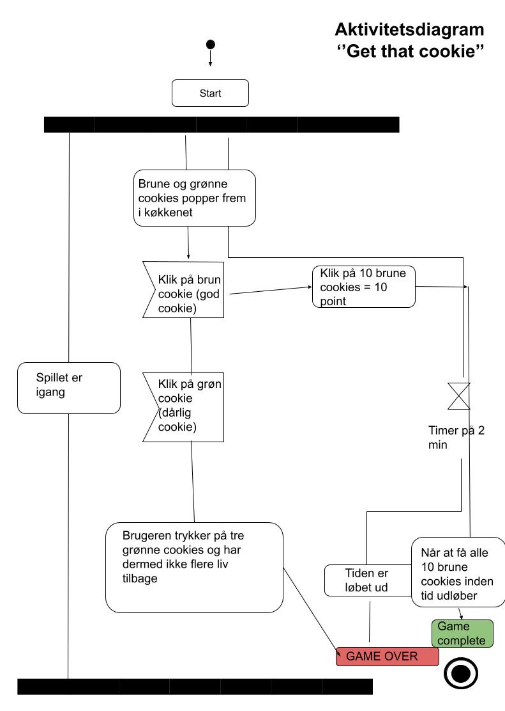

Animation
Fra skitser til færdigt design
I grundlæggende animation skulle vi designe og programmere et spil og vi blev vi derfor introduceret for Adobe Illustrator og Javascript. I forbindelse med Javascript lærte vi bl.a. brugen af container og sprite, .addEventlistner, document. querySelector, function og meget mere! Vi skulle selv finde frem til spil-idé og finde frem til designet (titelskærm, baggrundsdesign, taber – og vinderskærm, inforskærm og UI-elementer). Vi blev derudover introduceret for to diagrammer: Aktivitets-diagram og statemachine-diagram. Disse diagrammer blev brugt til at holde oversigt over spillets aktivitet og interaktivitet. Nedenfor viser jeg mine mit design (skitser og det færdige design), assets og mine diagrammer.

Spildesign
Aktivitetsdiagram